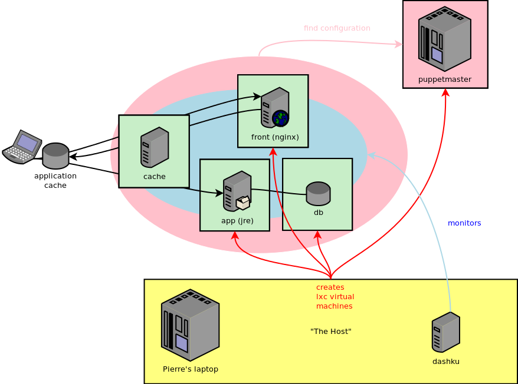
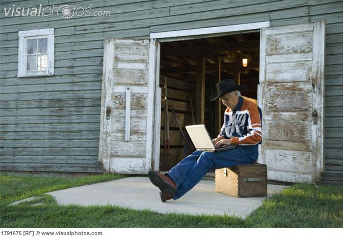
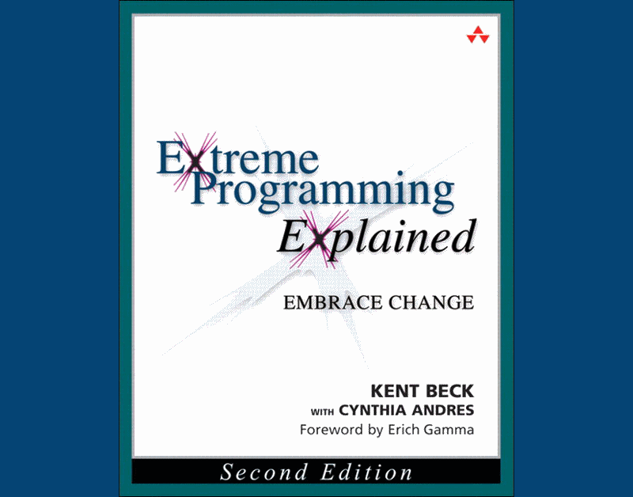

Mise en Production
Continue
avec Puppet
9h30 - 12h30 - Salle Louis Armstrong CD
M-E-P-C
Mise En Production Continue
Continuous Deployment


2012
The application
The dashboard
Powered by dashku
Let's deploy
This is the first time, as usual.
The application
What does it looks like ?

Get the stuff
Clone repository
git clone git@github.com:ericlemerdy/mepc.git
Ask for accreditation to push
Execute application locally
Compile
# sudo apt-get install maven
mvn clean install -f java/pom.xml
mvn clean install -f java/mepc-functional-tests/pom.xml
Launch application
# sudo gem install foreman
foreman start -f java/Procfile
The push process
lxc-host is the chef
- cron looking for git changes
- build artifacts
- deploy on integration
- create integration
- start integration
- install dependencies and deploy artifacts
- validate integration
- destroy integration
- deploy on blue | green
- swich blue | green
Now it's your turn
Develop a feature...
...and push !
Ideas
- "un-hire"
- get hire state from server
- save hire state
- ...
How to push ?
Use etc/git-build
# The first time:
# git config private-build.command "mvn clean install -f java/pom.xml && mvn clean install -f java/mepc-functional-tests/pom.xml"
git build
- Creates a local clone, build there and push.
- Does not trouble your for next developement.
B.A.C.K.U.P
Mimic production environment
A data-center on your regular laptop ?
Go virtual :
VirtualBox, Vagrant, LXC, ...
Got extra dollars ?
Use the cloud :
Amazon EC2, ...
Approaches to Continuous Deployment
It is always possible to change by making good choices.
Kunzang Choden - Source (fr)
Production first, quality by roll-back

Quality first, production as soon as ready

Comparison
| Production first, quality by roll-back | Quality first, production as soon as ready |
|---|---|
|
Minimal cycle time Business impact of a failure Maturity for roll-back efficiency Production and quality monitoring |
Functional quality Minimum Marketable Feature |
Physical architecture
Question :
How would you make production safe from a material failure, a push that broke the application, a regression in contracts ?
How to make production safe ?
Static resources always UP | JUnit, graph by Zabbix |
Dynamic resources always UP | JUnit, graph by Zabbix |
Dynamic resources API non-regression | JUnit with RestAssured |
Dynamic resources functional test | Covered |
Applicative functional test | JUnit with JWebUnit on the application |